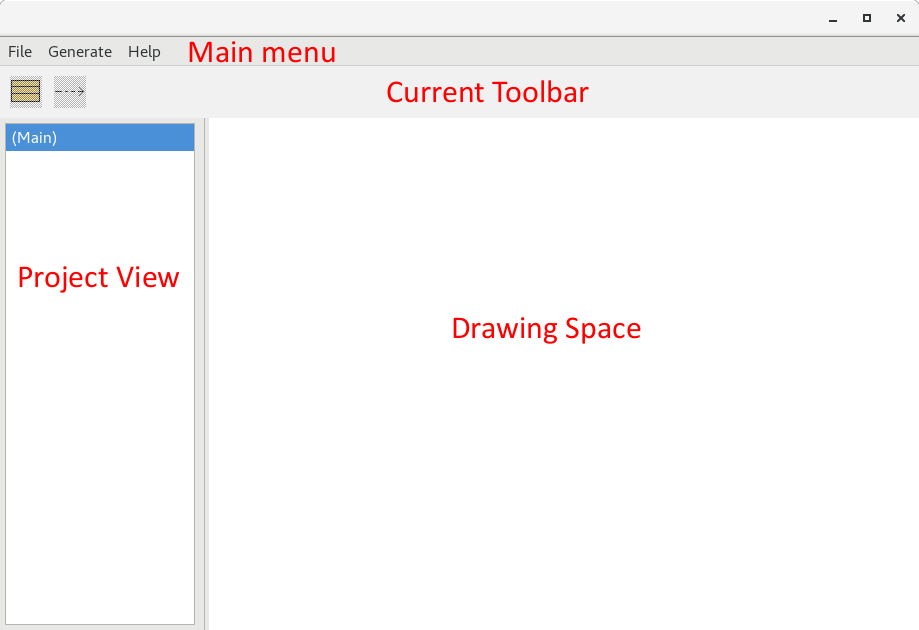

First steps with SunRiZe
Projects
A project is composed by a single model file (that is a json file)
and several source files, that are the compilable code.
From the model file we can create and modify the related source
files but those file are modifiable and parts of the written code
can be stored in the source files only, so it is not possible to
consider a project file, without the generated source files.
However if you do not need to change the project model after
released, you can avoid to copy the model file and the project will
be considered completely independent from SunRiZe.
The parts of code generated by the “model” are completely manageable
by the SunRiZe graphics editor an contained in several
drawings called contexts.
In the current version of SunRiZe, these drawings can be
ordered in a two level tree, with a main context describing the
generic structure of the project, and several sub-contexts,
describing the related FSMs ( finite state machines ).
Creating a project-space
Due to the fact that a project-space is strongly connected to the
IDE or the editor we are using, and many editors create it
automatically, the creation of a project-space is an operation that
must be performed manually.
SunRiZe, considers a project space as a folder where it can
put the model and the code. The C generator, generates the
code in two sub-folders called include for the include files
and src for the source files.
Several IDEs do not allow to set the name of this sub-folders or use
different names : in these cases, you can resolve everything with
some link. For example with the Arduino ide, that uses a
single folder to store everything, you can create a root folder with
the name of the project, and a sub-folder named Arduino
inside the root folder, then a couple of links src and include
to the Arduino folder.
The links can be created in this way :
For POSIX systems (always into the Semaphore folder) :
ln -s Arduino src
ln -s Arduino include
for Windows:
mklink /J src Arduino
mklink /J include Arduino
The result is something like this :
MyProject
|
+ Arduino
+ src → Arduino
+ include → Arduino
At this point you can use the folder MyProject as a SunRiZe
project folder (and the model will be placed in this folder), and
you will find all your generated code in the Arduino folder where
you will be able to put the .ino main file also and use it to
compile the project.
This procedure can be easily adapted to different situations.
Standard Files
Before compiling the code, we need to copy four files, that can be
modified to be adapted to the current development environment and
CPU.
These files deserve a special chapter later in this document, but we
need to consider that the inclusion has to be considered a part of
the project setup.
Layout
The SunRiZe layout is composed by four different areas.

The Project View is the navigation bar indicating the
current context. Originally a project has an empty main context
only.
The Drawing Space, likewise a normal editor, is the
viewing/editing area for the selected context. We will see how to
draw and modify the items in this area later in this document.
The Current Toolbar is the tool-bar we will need to
introduce new items in our drawings, and it depends from the context
type. Due to the fact the we have two different context types , a
main context and a FSM context we have two different toolbars.
At the beginning the tool-bar that is of type main, is grayed
because we have not yet defined the project.
In the Main Menu we can see :
File
Reload
Save
Project
Exit
Generate
Generate Code
Help
About
All disabled except for About, Exit and Project.
With Project, we can choose a folder (in the previous
example MyProject) and the model will become editable.
With Save we can save the current model that is unique in
the current folder and always named model.srz .
If a file model named model.srz is already present into the
folder the model will be opened instead of created and will allows
to edit the model.